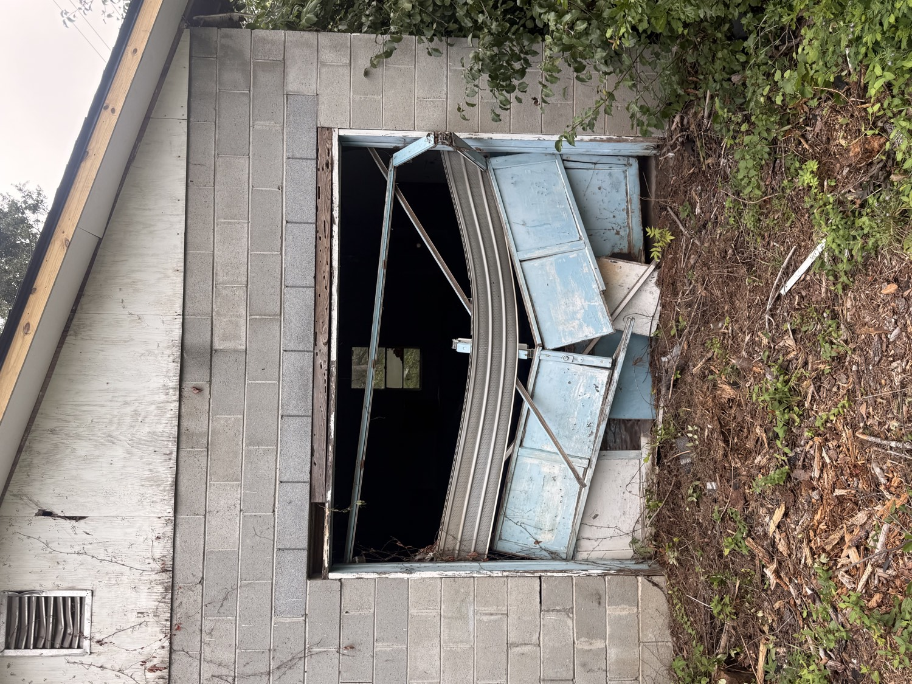
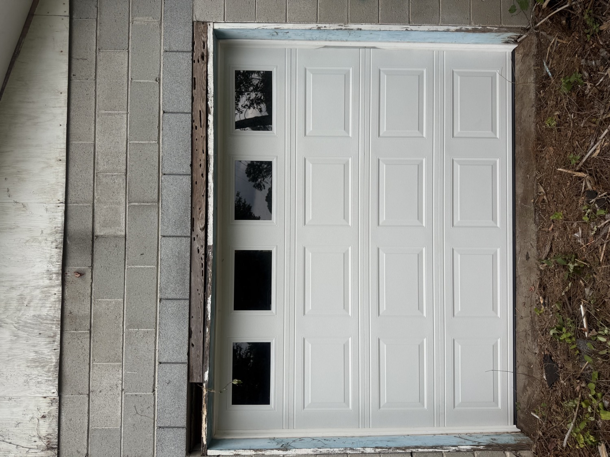

Home / Our Work
44 photos from real jobs — new doors, modern glass, commercial bays, openers and spring work. Every picture on this page was taken by our own crew on a Viking job site across Spartanburg, Boiling Springs, Greer and Greenville.
Before & After
This block garage had a door folded in on itself. Same opening, one visit later.


Photo Gallery
Tap any photo to open it full size. Filter by the kind of work you're looking for.
Showing all 44 photos
Free on-site estimates across Spartanburg, Greenville and the Upstate. Most repairs done same day.